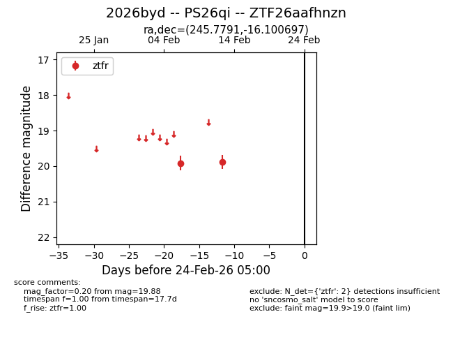
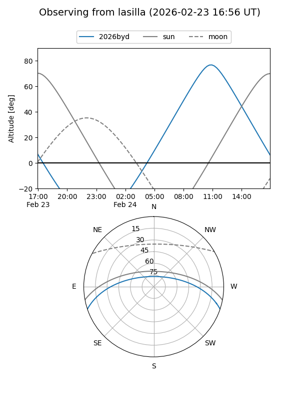
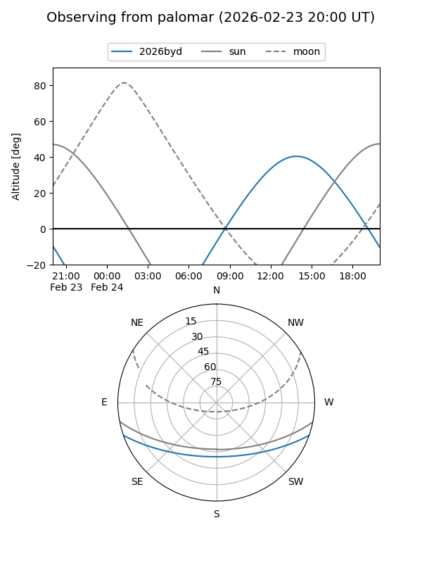

2026byd
Target 2026byd at 2026-02-24 09:08
Aliases and brokers:
FINK: link
Lasair: link
ALeRCE: link
TNS: link
YSE: link
alt names
ZTF26aafhnzn (ztf,fink_ztf)
2026byd (tns,yse)
PS26qi (panstarrs)
Coordinates:
equatorial (ra, dec) = 245.7791,-16.10070
equatorial (HMS+DMS) = 16:23:06.98,-16:06:02.51
galactic (l, b) = (359.2437,+22.89856)
Flags:
Photometry:
last ztfr=19.88
2 ztfr detections
Lightcurve

Visibility


Additional plots